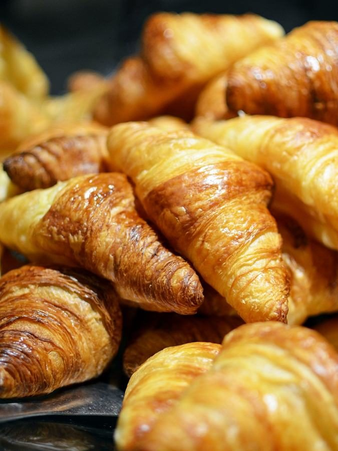
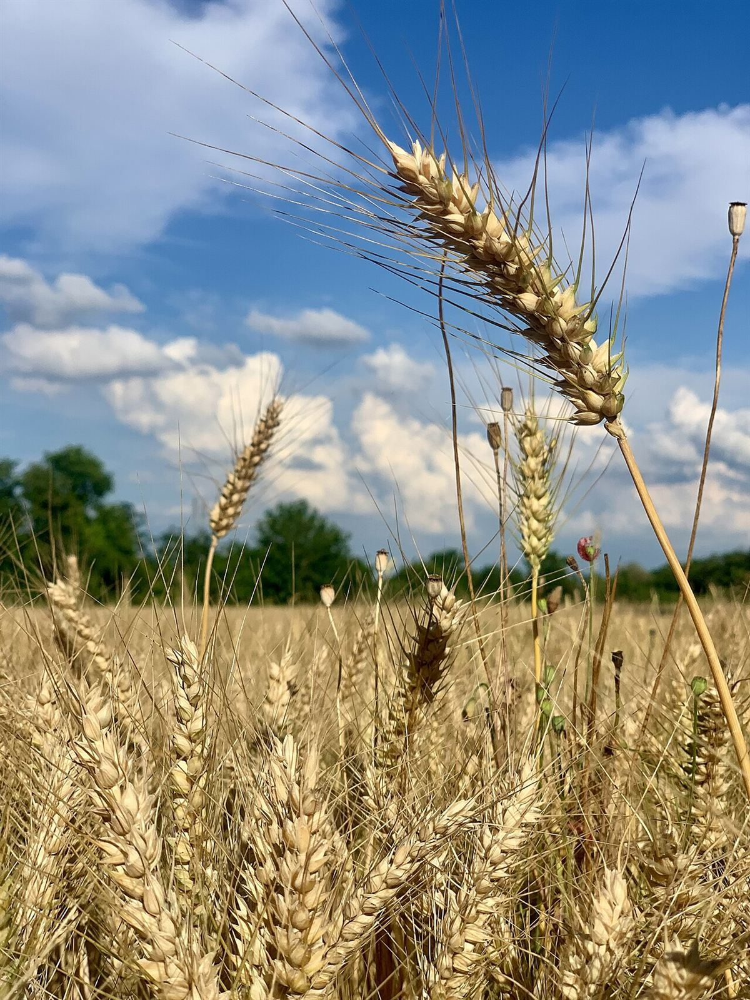
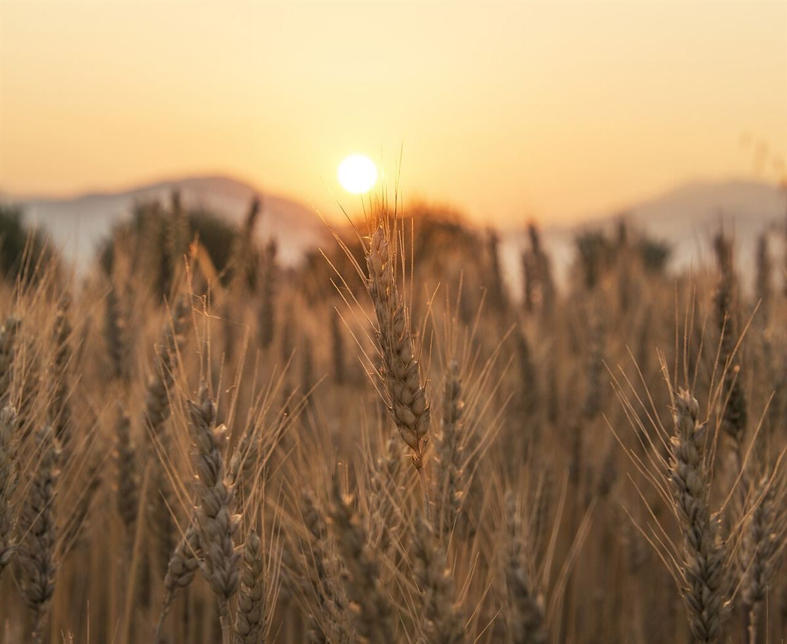

香川県丸亀市飯山町

Les liens
香川県丸亀市飯山町のベーカリー
地域の方と、パンを。くわしい情報は準備中です。まずはお気軽にお電話、またはInstagramからお問い合わせください。
コンセプトは制作側の案です。
パンづくりの流れ(イメージ)
お店の実際の工程ではなく、制作側が用意した一般的なイメージです。
小麦
パンの材料の中心になるのは、畑で育つ小麦です。一般的なパンづくりは、ここから始まります。

粉
収穫された小麦は、挽かれて粉になります。粉はパンの土台となる材料のひとつです。

生地
粉に水などを合わせてこね、時間をかけてふくらませます。一般的には、この工程で生地が育ちます。

焼成
ふくらんだ生地はオーブンで焼かれ、パンになります。焼き色がつくのは、この最後の工程です。

お店の情報
- 住所
- 香川県丸亀市飯山町上法軍寺846-1
- 電話
- 0877-35-8909
- @b_les.liens0225
- 営業時間
- 準備中(お問い合わせください)
- 定休日
- 準備中(お問い合わせください)

メニューは準備中です。
メニューを見るイメージ写真
ご連絡はお電話かInstagramから
営業時間やメニューなど、準備中の内容はお問い合わせください。
掲載写真はフリー素材のイメージで、お店の実際の商品・店内・外観ではありません。他の地域や海外で撮影された写真、撮影地が不明な写真を含みます。